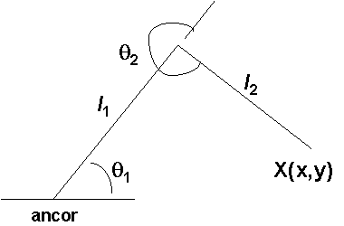
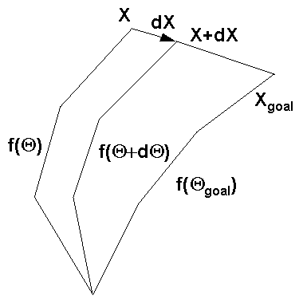
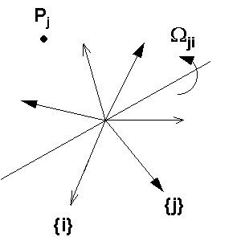
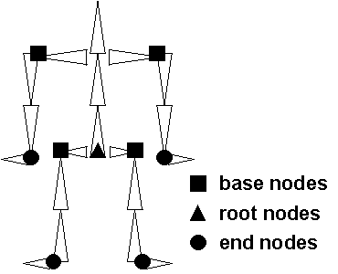

Thus the concept of synthetic actors has been introduced. Synthetic actors can be used to produce a more natural looking animation of human figures, which can even provide suggestions of feelings and emotions. The main benefit of these systems is that they usually do not require the use of key frames. Motion sequences can be specified with only a few parameters.
[1] X = f ( Q )Thus the motion of the end effector is the accumlation of all the transformations that lead from the base of the structure to the end effector, as the hierarchy tree is descended, thus given Q derive X.
-1 [2] Q = f ( X )
[3] X = (l cos Q + l cos (Q +Q ), l sin Q + l sin (Q +Q ))
1 1 2 1 2 1 1 2 1 2
It must be noted that adding another joint will add at least another DOF.
Though having more links will give more freedom of control, it may prove too
complicated to achieve in practice.

Q = (Q1 , Q2) -1 2 2 2 2 [4] Q = cos ((x + y - l - l ) / (2 l l )) 2 1 2 1 2 [5] Q = -(l sin Q ) x + (l + l cos Q ) y 1 2 2 1 2 2 ----------------------------------- (l sin Q ) y + (l + l cos Q ) x 2 2 1 2 2Note that as DOF increases the problem on finding Q for a given X becomes underdefined. The state vector becomes a subspace of the possible solution space. Even for our two link example, there are two possible orientations of the links given a single end effector position.
Thus we must reduce the possible solution set by adding constraints on the system like energy conservation, momentum conservation, and movement constraints. Also using geometric means to find the inverse solution gets unbearably complicated as the DOF increases, thus we must find an alternate method.
[6] dX = J(Q) dQwhere the (i,j)th element of J is
df i [7] J = ----- ij dx jbut for use in computer graphics we usually divide everything by dt to give
. . [8] X = J(Q) Qwhere dotX is velocity of the end effector which is itself a vector of six dimensions that include linear velocity and angular velocity, and where dotQ is time derivative of the state vector.
Thus the Jacobian maps velocities in state space to velocities in cartesian space. Thus at any time these quantities are related via the linear transformation J which itself changes through time as Q changes.
Why is this useful? Recall our inverse kinematics statement given as equation [2]. If we localize around the current operating position and invert the Jacobian we get:
-1 [9] dQ = J (dX)Thus we can iterate toward the goal over a series of incremental steps as shown in the figure below.

If we recall our forward kinematics solution for the two link structure as shown previously (notation is abbreviated)
[10] X = (l c + l c , l s + l s ) 1 1 2 12 1 1 2 12and differentiate using the chain rule
. . . . . . .
[11] X = (-l s Q - l s (Q + Q ), l c Q + l c (O + Q ))
1 1 1 2 12 1 2 1 1 1 2 12 1 2
.
| -l s - l s -l s | | Q |
. | 1 1 2 12 2 12 | | 1 |
[12] X = | | | . |
| l c + l c l c | | Q |
| 1 1 2 12 2 12 | | 2 |
The 2x2 matrix on the left is the Jacobian and the column vector is the state
vector Q. Note that this is only simple for very simple link hierarchies. Trying to differentiate for a structure of many links is tedious at best.
Thus how do we go about constructing this Jacobian?

If we consider two frames {i} and {j} whose origins are coincident and where {j} rotates with an angular velocity omega(ji) as shown in the figure above. The point Pj is fixed in {j} but appears to move with respect to {i}. To an observer in {i}, frame {j} appears to rotate by an amount omega(ji)dt over an incremental amount of time dt. [WATT, p.359] derives an expression for rotating a vector r about an axis n by an amount Q as:
[13] Rr = r cos Q + (1-cos Q)n(n dot r) + (sin Q) n x rwhere Rr is the rotated vector r. For incremental rotations we get
[14] Rr = r + Q n x rand we can substitute omega(ji)dt for Qn and Pj for r to get the incremental change of Pj as seen from {i} as
[15] omega dt x P ji jand finally we divide by dt to get
[16] V = omega x P pi ji jMore generally, the origin of frame {j} could be moving with respect to frame {i} with linear velocity Vji and point P could be moving with velocity Vpj, these velocities are linear and may be simply added to get
[17] V = V + omega x P + V pi ji ji j pjIt is very important to note that the frame of reference used must be the same for all calculations, otherwise inconsistent values will result.
[18] V = V + omega x P + V ki ji ji kj kjUsing [18], we can show that the angular velocity of the end effector is
n-1 [19] omega = SUM omega n0 i=1 i,i-1or stated verbally is the sum of all the local angular velocities. A similar derivation for linear velocity yields
n-1 [20] Vn0 = SUM omega x P i=1 i,i-1 niwhich says that the linear velocity of the end effector is the sum over all intermediate frames of the cross product of the local angular velocities with the vector from the end effector to the origina of that frame.
We can see how to use these relations, if we refer back to our two link example and apply equation [18]. We see that the linear velocity of X is now V30 (for n=3) and is written out as
V = omega x P + omega x P 30 10 31 21 32where we evaluate the following in frame {0}
P31 = (l1c1 + l2c12, l1s1 + l2s12) P21 = (l2c12, l2s12) . omega = ( 0, 0, 1)O 10 1 . omega = ( 0, 0, 1)O 21 2Substituting and rearranging terms yields the same results as derived earlier by using differentiation.
The actual process of using these relations is fairly involved and beyond the scope of this article. The author hopes the reader has at least some appreciation for how the process of inverse kinematics works. Now let's look at a few example applications.

At each root or base node we can use inverse kinematics as an attachable engine. This engine governs the motion achieved in each subchain of links. A base node is in effect the end effector of a root node. Thus all combinations of limb flexion and spinal flexion can be achieved.
The user (typically choreographers or animators) can block out a concept storyboard using the Stage editor. The user places characters on the stage, orients them, and specifies their motion using keyframes. This process is performed for all key scenes in the storyboard. Thus at this point only the character's movement around the stage is specified, not an individual character's movement of hands and legs.
For each figure being animated, the individual movements are contructed using a Sequence editor. The user can pick from menus or specify constraints on the limbs. Again key frames are used to speed up the entering of movements. Limbs can be moved via inverse kinematics just by grabbing a hand and moving it.
Finally multiple figures are combined using the Timeline editor to synchronize the individual movements with the movements of the other characters. Thus one character could be synchronized to duck just as another character is leaping over her head.
Life Forms supports various body models from stick figures to fully rendered characters. The system has been successfully used to help choreograph dance sequences for ballets and has been used by animators in creating elaborate dance sequences.
[BRUD] notes in their article that walking can be broken down into two basic phases -- a swing phase and a stance phase. For walking there also exists a portion of the walking cycle where the stance phase of each leg overlaps. The motion of a leg is described separately for each of these two phases. It is relatively straight forward to derive the equations of motion when a leg consists of only two links. Complications arise when the foot and ankle joints are considered. The KLAW system also can take into account the pelvic list that most people exhibit when walking.
Sample Screen Shot 1 (7.4K) - connected links
Sample Screen Shot 2 (6.9K) - unconnected links
Sample Screen Shot 3 (11.4K) - showing all joint positions
[CALV] Calvert et al, "Desktop Animation of Multiple Human Figures", IEEE Computer Graphics and Applications, May 1993, pp. 18-26.
[WATT] Watt and Watt, Advanced Animation and Rendering Techniques: Theory and Practice, Addison-Wesley, 1992, pp. 359, 369-394.
[MONH] Monheit and Bradler, "A Kinematic Model of the Human Spine and Torso", IEEE Computer Graphics and Applications, March 1991, pp. 29-38.
[SIMR] Simerman, "Anatomy of an Animation", Computer Graphics World, March 1995, pp. 36-43.
{kind=link}
{kind=link}
{kind=link}